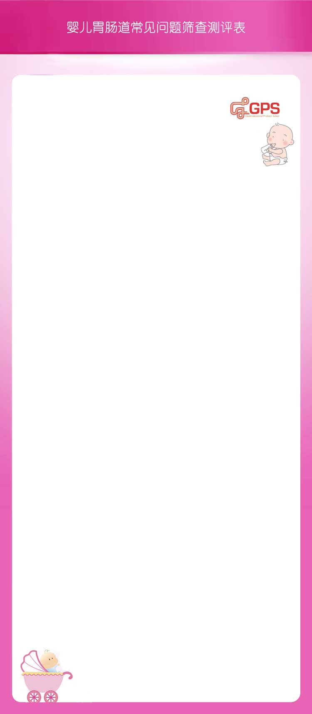

症状评估
- 最近宝宝是否出现过以下现象
-
吃完奶后不久,有大量奶液从嘴里溢出
吃完奶后不久,有少量奶液从嘴角流出
吃完奶一段时间后,有少许小块状酸味奶吐出
无以上现象
- 这种现象已经持续多久了
-
小于2周
2周-3周
3周以上
- 最近一周,大约有几天出现过这种现象
-
1-3天
4-5天
几乎每天
- 一天当中这种现象的发生次数平均可达到
-
1次或以下
2-3次
4次以上
- 每次吐奶量大约有
-
小口奶
一大口奶
大量奶
- 是否伴有以下症状
-
频繁呕吐
吐血
发热
便血
发作咳嗽
皮疹
口唇或眼脸肿胀
体重减轻或生长发育慢
表情痛苦/异常姿势
以上都没有